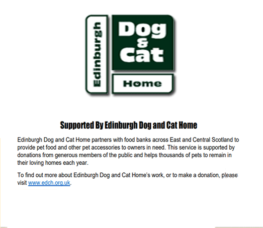

Using Your Local Pantry
The Greenhouse Pantry gives individuals and families access to an affordable food shop, once per week, with each visit costing £4.50.
The items we stock include a variety of store cupboard items, fresh and frozen food, fruit, vegetables, bread and pastries as well as cat and dog food and period products which would typically equate to a shop worth at least £15 to £20.
Donating Food
Donating food to the pantry is a meaningful way to support our community and ensure that everyone has access to nutritious meals. Your contributions make a direct impact on the lives of our neighbors in need. Whether you're donating non-perishable items like canned goods, pasta, rice, or fresh produce from your garden, every donation is greatly appreciated.
Your generosity helps us stock our shelves and provide a diverse range of options for those facing food insecurity. Together, we can make a difference by nourishing our community and fostering a spirit of compassion and support. Thank you for your generosity and commitment to helping others in Craigmillar.
Edinburgh Dog and Cat Home
EFS Six Week Summer Cookery Programme @ the Pantry
Craigmillar Community Food Hub
The Greenhouse Pantry is an extension of our 'Craigmillar Community Food Hub' project and is a vehicle to increase CAT's engagement with members of the community who may be experiencing food insecurity allowing them further opportunities to build their food resilience. The Greenhouse Pantry also has free workshops and classes in cooking, food growing and participating in community meals and in addition to that there is volunteer and work experience opportunities.
Become A Member
Membership is open to anyone living in the local area who is on a limited food budget and struggling with food insecurity, with no requirement to be referred by a professional or other third party. The Greenhouse Pantry is currently not accepting new members online but those interested in membership are invited to visit the Pantry to speak to the team.
Finding Us
You can find the Greenhouse Pantry at:
64 Niddrie Mains Road Edinburgh, EH16 4BG
Normal Opening times are:
Volunteering with Us
The Pantry could not operate without volunteers. Volunteers gain employability skills; training such as manual handling and food hygiene; social connection and a sense of fulfilment through supporting the local community.
Could you help us by volunteering as a Food Pantry Assistant? Or by collecting food from your local supermarket that would otherwise go to waste? Or getting the cat and dog food donations? Please get in touch via Volunteer Edinburgh to submit an application or find out more information.
Our InstagramOur Social Media
Events
Welcome to our event area and noticeboard, you'll discover a bustling virtual space where we keep you informed about upcoming events, volunteer opportunities, and community initiatives. Our noticeboard is your go-to source for the latest news, announcements, and ways to get involved. Whether it's a food drive, a cooking workshop, or a community garden project, you'll find all the details here.

Newsletters
Welcome to our newsletters and updates section for Craigmillar Community Action Team (CAT) Pantry! Here, we keep you informed about all the latest happenings and initiatives in our community. From highlighting the impact of our pantry programs to sharing stories of resilience and hope from our neighbors, our newsletters provide a window into the heart of Craigmillar. Stay up-to-date on upcoming events, volunteer opportunities, and ways you can contribute to our mission of combating food insecurity. Whether it's a new partnership, a call for donations, or a recap of our recent activities, you'll find it all here.
The Pantry Model
The Pantry model was created to ‘go beyond’ the Foodbank model, aiming to create a more sustainable and longer-term solution to food poverty.The Greenhouse Pantry seeks to ensure that all members feel a greater sense of control in being able to choose their own food products, pay a small fee to contribute and feel able to participate in their local community.
 Follow Us
Follow Us